Ten mockups of the whole plugin in the worn metal and sawdust look, for you to pick from and mark up. Every screen is 1280 × 800, rendered from scripts in the repo, so any change is a re-render. All text passes WCAG AA in both wear levels (lowest 5.2:1, body text 13.7:1). No texture sits behind text, and every state has a word or shape as well as a colour. Tap a screen to open it full size. Comment on anything.
v4 · streamline: accept or reject each rule
Your note on v3 was "simplify and streamline a lot; VERMIN needs a rat stencil; the cab needs a new design". Each rule below is a proposal. Leave a comment such as "R3 no" or "R5 yes, but…". Every v4 screen lists which rule caused each change.
- R1 One fact, one place. No caption chips. The path is shown by a coloured edge and a word, and the inspector doesn't repeat what's on the pedal face.
- R2 Rig + one rail. The meters column is gone, IN / OUT meters sit in the top bar, GR is the ring on VISE, and the cab gets the space.
- R3 Show on demand. MATCH vs ORIGINAL appears only after a match. ALIGN, LAT and CPU go behind DETAILS, and empty slots collapse to one +.
- R4 Lean top bar. Brand, preset, A/B, RIG / WOODSHED, MATCH, NAM FORGER, settings and the LIVE lamp. No other readouts.
- R5 Lean Settings. One status strip. The dBu field appears only for Custom, Input channel shows Auto with an override, and the gate floor moves to GATE.
- R6 Colour discipline. Amber for values, green only for good states, orange for selection and primary actions.
- R7 VERMIN on the rig. The rat-stencil face is coming from the VERMIN work and is marked as pending until then.
- R8 New cab. Three directions below. Pick one.
v4 · streamlined (left: v3, right: v4)
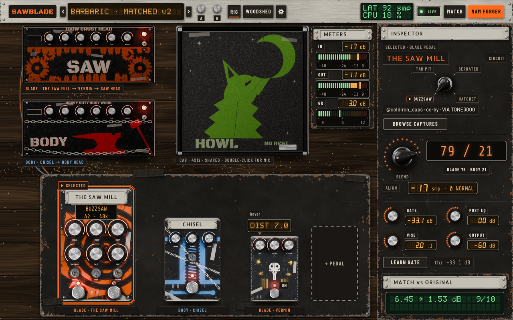
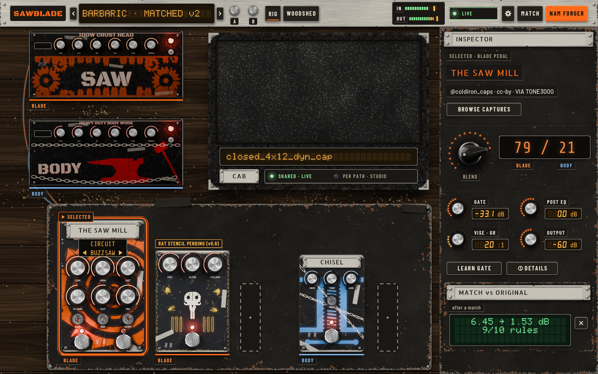
What changed
- R1 → no caption chips under amps or pedals; each amp and pedal has a 3 px path edge (BLADE orange, BODY blue) plus a
BLADE/BODYword in a well. - R1 → the BLEND nixie
79 / 21is labelledBLADEandBODYunder its two numbers; the caption that repeated the values is gone. - R1 → the inspector no longer repeats the CIRCUIT selector; it lives on THE SAW MILL's face (
CIRCUIT ◀ BUZZSAW ▶on its display). - R2 → the METERS column is gone and the cab takes the space; IN / OUT are thin LED ladders in the top bar, GR is the LED ring on
VISE · GR. - R3 → MATCH vs ORIGINAL is a dismissable card (✕) captioned "after a match"; ALIGN is gone from the inspector,
ⓘ DETAILSstands for the pop-over (ALIGN, LAT, CPU). - R3 → empty pedal slots collapse to one
+at the end of each path's row (BLADE row, BODY row). - R6 → amber for values, green only for good states (LIVE lamp, ✓, the match result), orange for selection and primary actions; no new hues.
- R7 → VERMIN stays on the board in the BLADE row at true scale, tagged
RAT STENCIL PENDING (v0.9)(the v0.9 session draws the rat; no rat is drawn here). - R8 → three cab directions as three variants of this screen, otherwise identical: (a) tolex, (b) plywood, (c) road case.
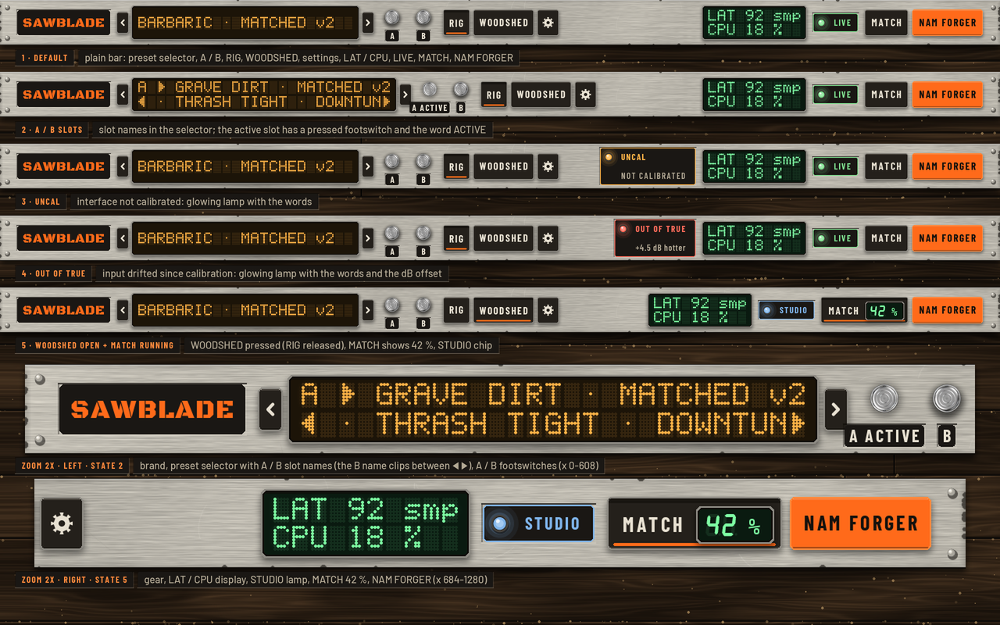
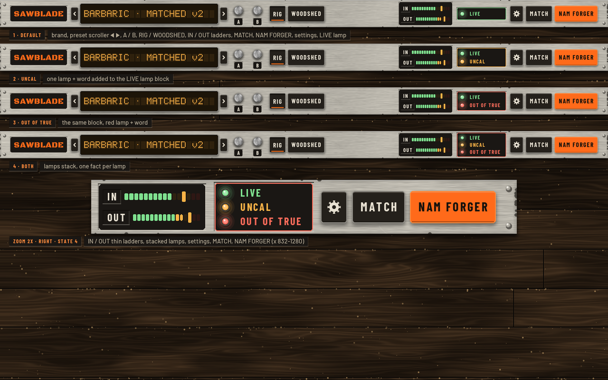
What changed
- R4 → only: brand, preset scroller with ◀ ▶, A / B, RIG / WOODSHED, MATCH, NAM FORGER, settings, LIVE lamp (and the IN / OUT ladders).
- R2 → LAT / CPU and every other readout are gone; IN / OUT are thin ladders.
- R6 → UNCAL and OUT OF TRUE are lamps with words folded into the LIVE lamp block (stacked, one fact per lamp); states shown: default, UNCAL, OUT OF TRUE, both, plus one 2x zoom.
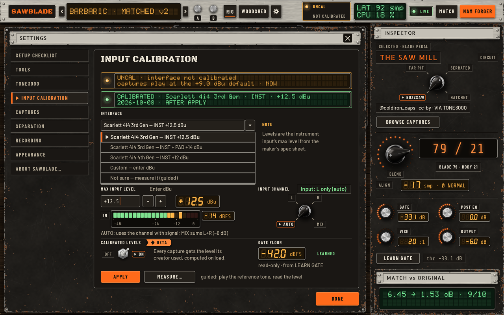
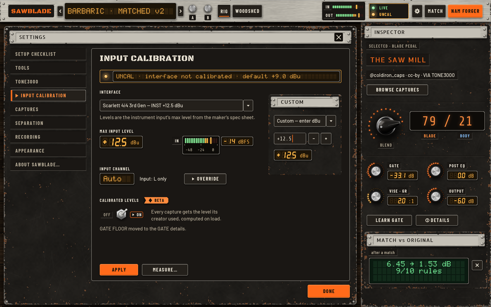
What changed
- R5 → one status strip with the current state only (the second CALIBRATED strip is gone).
- R5 → the device dropdown is closed; the manual dBu field appears only under "Custom" (small second-state inset).
- R5 → INPUT CHANNEL shows
Autowith a closed▸ Overridebutton; GATE FLOOR is removed with a note that it moved to GATE. - R6 → amber values, green only for the Auto good state; one orange primary (APPLY).
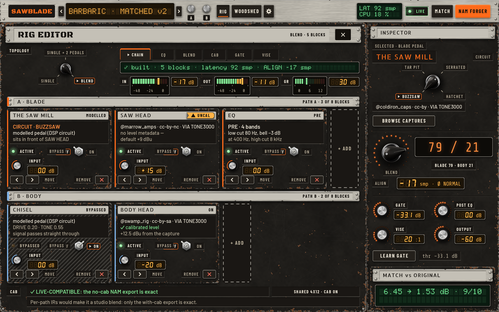
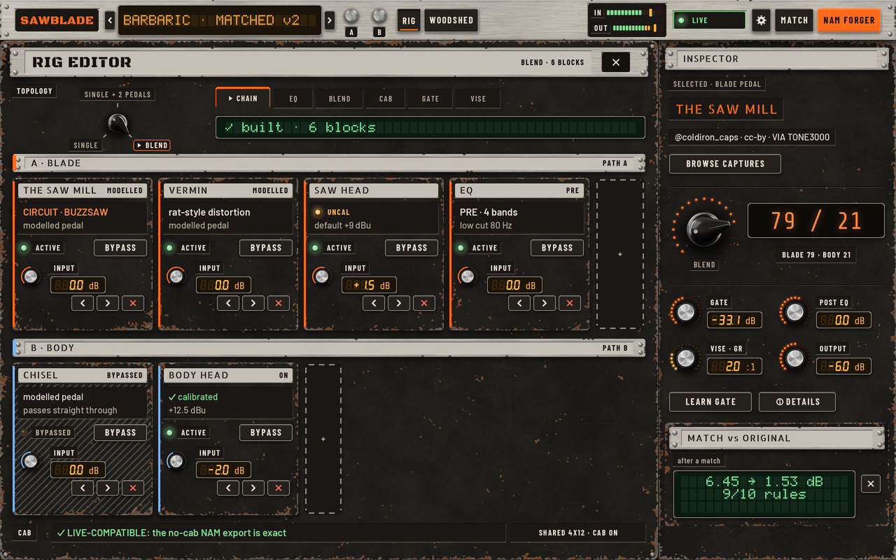
What changed
- R1 → card headers keep only the type tag (
MODELLED,CAPTURE,PRE); the state is the lamp (ACTIVE/BYPASSED), and the bypass hatch stays. - R1 → no duplicated captions on the cards (credit, level metadata and circuit lines are cut to two short lines); the path is the lane plate plus the orange / blue edge.
- R3 → empty slots collapse to one
+per lane; the status is one line (✓ built · 6 blocks), the meters are in the top bar. - R6 → UNCAL and BYPASS stay as lamp + word (amber lamp
UNCAL,ACTIVE/BYPASSEDlamp with a BYPASS button). - R7 → the VERMIN card is in lane A.

- a, tolex: worn black tolex with steel corner caps, a fine basket-weave salt-and-pepper grille (low-contrast cloth with small silver flecks, a vertical drape shading, edges running under the tolex frame), a riveted steel
CABnameplate, the IR title on a small amber LCD strip. - b, plywood: stripped open-back bare plywood with four visible generic speakers and a stencilled
CAB · 4x12strip. - c, road case: aluminium edge extrusions and corner caps, butterfly latches, a perforated grille, a stencilled
CAB · 4x12panel. - All three show SHARED · LIVE (lit green lamp) vs PER PATH · STUDIO (unlit blue lamp) as lamps plus words.
Earlier rounds · v2 and v3, all screens
Palette with measured contrast, materials (worn steel, brushed aluminium, bench wood, sawdust, riveted plate), type, knobs, footswitches, LEDs, toggles, selectors, buttons, LCD and nixie readouts, badges, frames.

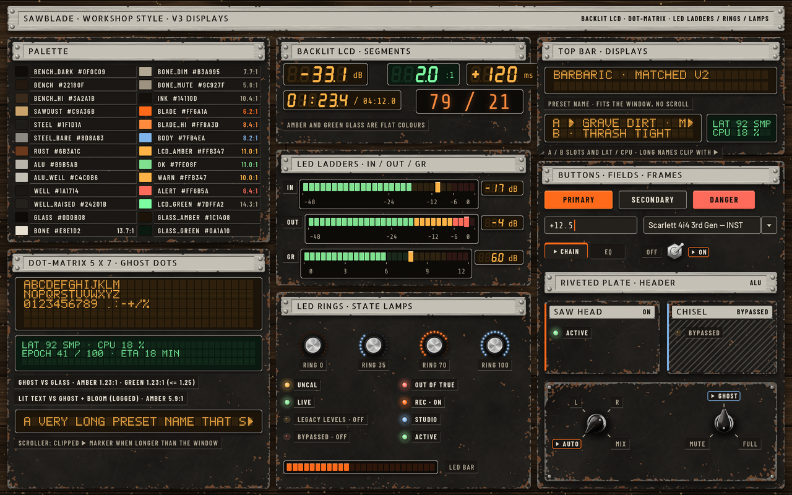
BLADE and BODY amp heads, the cab and the pedalboard with THE SAW MILL (selected) and CHISEL. The inspector has the circuit selector (BUZZSAW / TAR PIT / SERRATED / HATCHET), the BLEND readout and GATE, POST EQ, VISE and OUTPUT with value readouts.

Five states: default, A/B with slot names, uncalibrated chip, OUT OF TRUE chip, and WOODSHED open with MATCH running. Two 2× zooms below.

Before and after status, the Scarlett 4i4 instrument presets, the auto input-channel caption, the dBu entry with readout, input channel AUTO / L / R / MIX, the CALIBRATED LEVELS beta toggle and the learned gate floor.

Banks, categories and the preset list. The info panel shows each capture's creator and licence. A legacy preset is selected, showing the LEGACY LEVELS hint with USE CALIBRATED LEVELS.

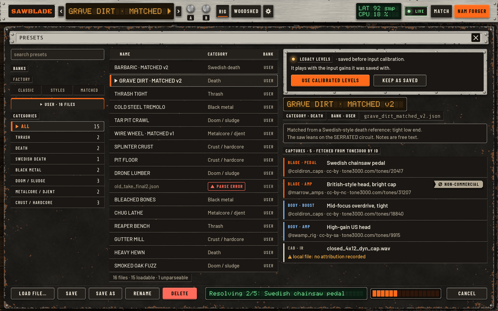
Reference song, your DI takes, auto-refine, refined and preview results with audition and apply, and the spectrum (reference solid, match dashed).

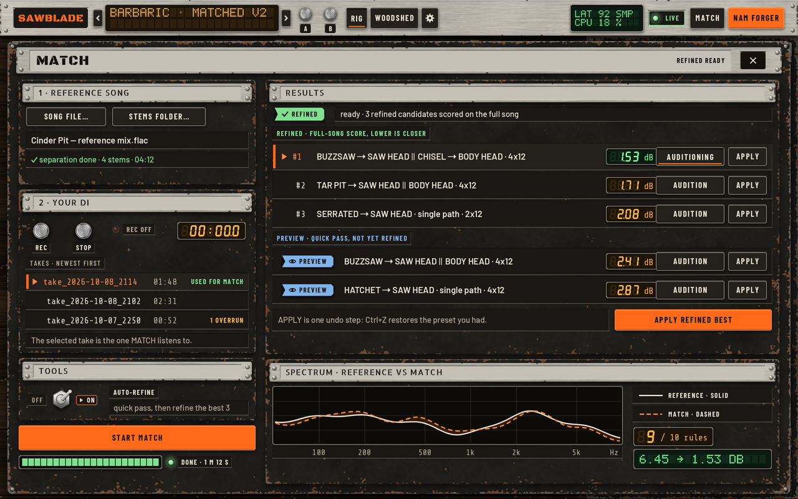
Export modes, size, validation DI, the VISE choice, what goes into the model, credits with the non-commercial badge, train and resume, export notes, and the training strip.

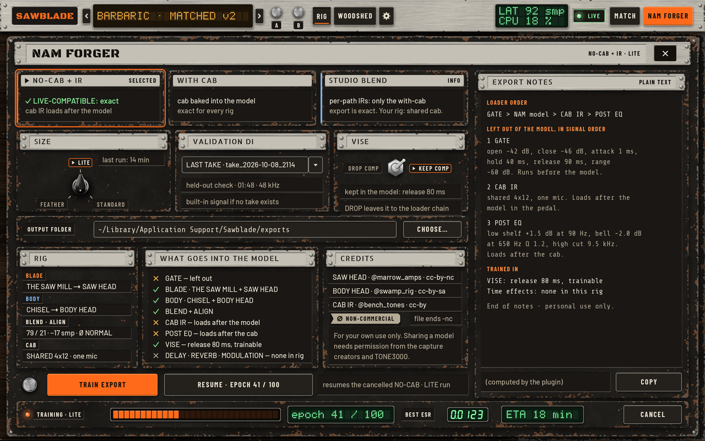
The cassette deck is the play-along panel: counter, loop A/B, count-in, backing fader and guitar stem MUTE / GHOST on its own controls. Song, takes, offset, sync to host and the record band sit on a steel side panel.

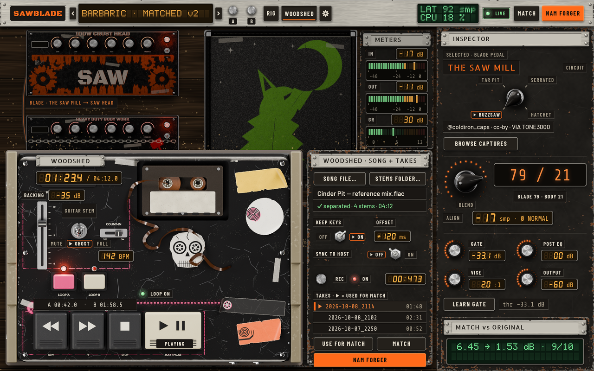
Topology selector, tabs, and the BLADE and BODY lanes of block cards. The SAW HEAD capture card carries an UNCAL badge and CHISEL is shown bypassed.


OUT OF TRUE and uncalibrated banners and chips, the UNCAL badge in three places, confirm and error dialogs, and a toast.


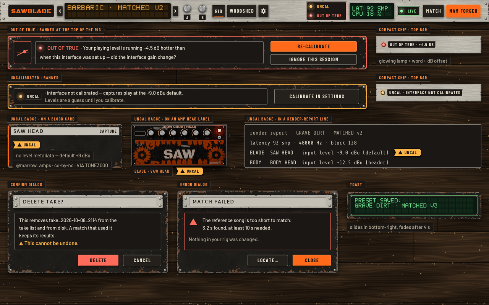